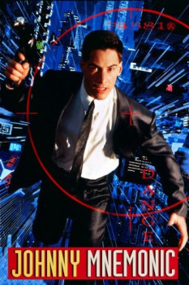

Country:Canada, 97 minutes
Spoken languages:English, Japanese
Genres:Sci-Fi, Action, Adventure
Director(s):Robert Longo
Writer(s):William Gibson
Video Codec:Unknown
Number: 5755

Certification:R
Storyline:
In a dystopian 2021, Johnny is a data trafficker who has an implant that allows him to securely store data too sensitive for regular computer networks. On one delivery run, he accepts a package that not only exceeds the implant's safety limits—and will kill him if the data is not removed in time—but also contains information far more important and valuable than he had ever imagined. On a race against time, he must avoid the assassins sent to kill him and remove the data before it, too, ends his life.
Cast:
Keanu Reeves (as Johnny Mnemonic), Dina Meyer (as Jane), Takeshi Kitano (as Takahashi), Ice-T (as J-Bone), Dolph Lundgren (as Street Preacher)
Medium: Media file,
Location: D:\Johnny Mnemonic\Johnny Mnemonic.mp4
Loaned: No
Aspect ratio: Unknown